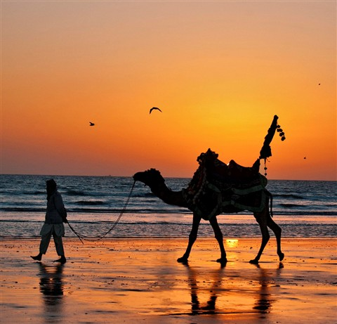
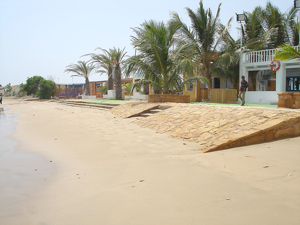
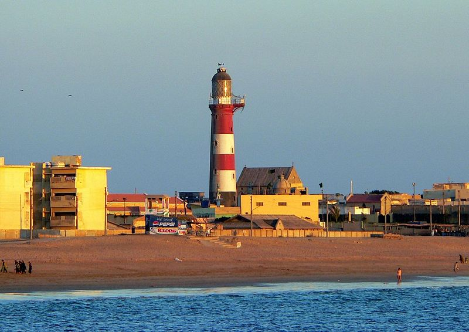
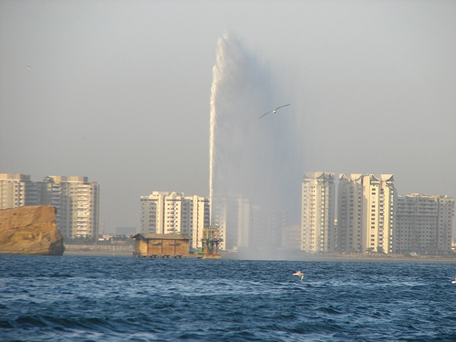
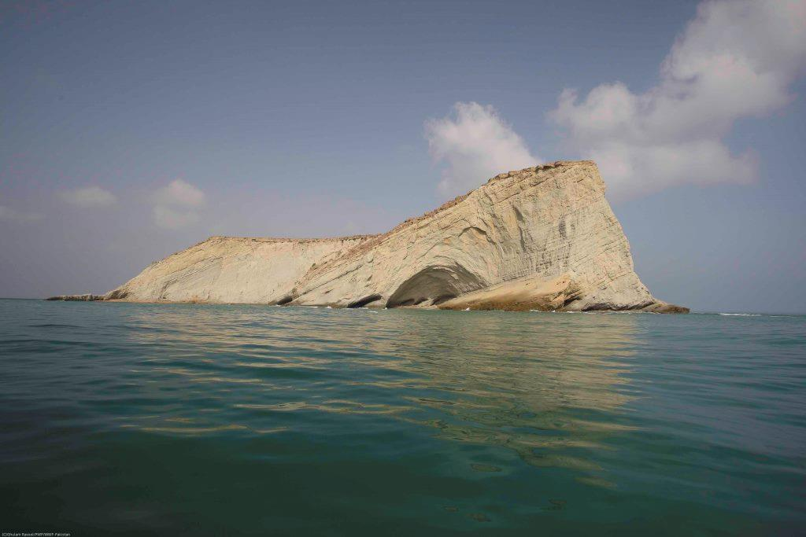
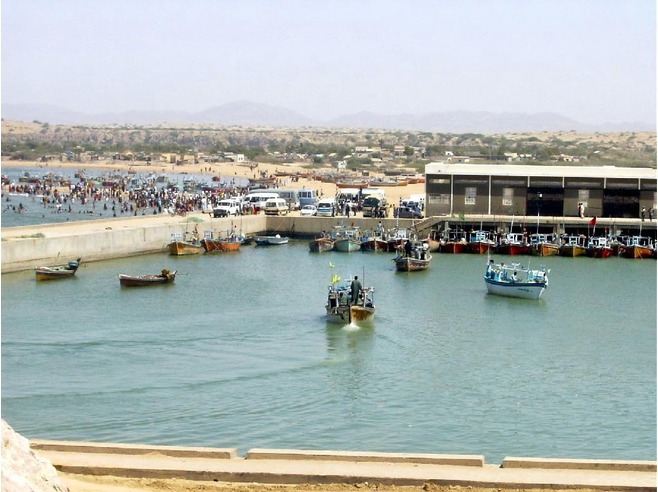
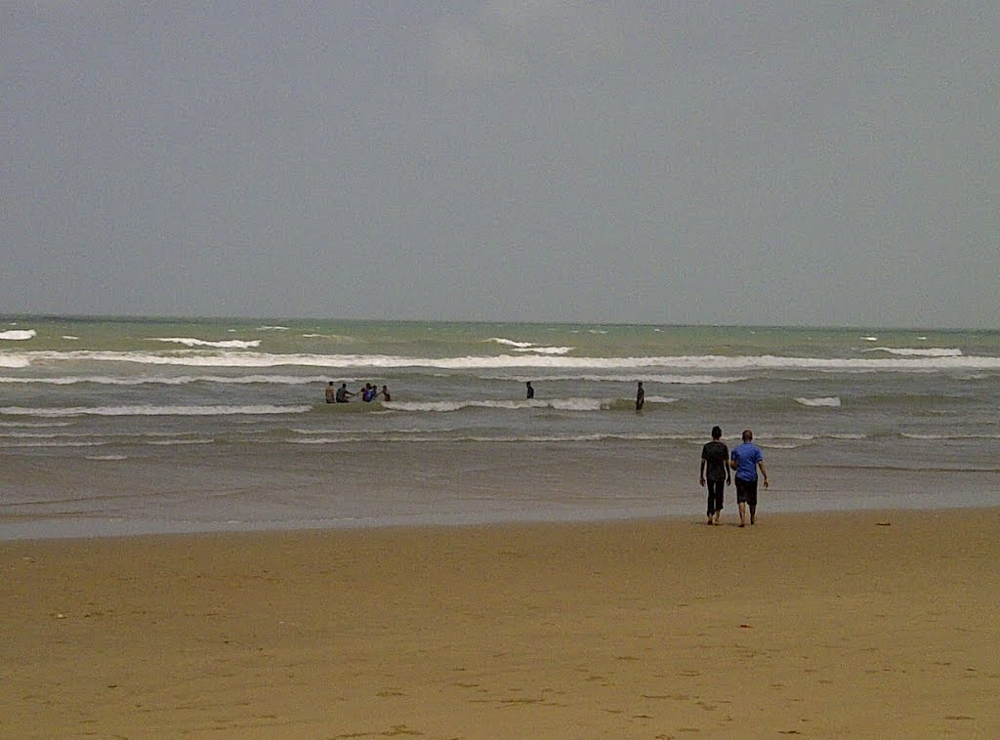

Beaches in Pakistan
Sandspit Beach

Sandspit Beach is situated south west of Karachi, Sindh.
Sandspit Beach is situated south west of Karachi, Sindh.
It is a very famous tourist spot.
The sea at Sandspit is very calm and quiet from October to March and very rough during the monsoon.
Remarkable variety of marine life-algae, and crabs are found here.
The shallow water here is ideal for swimming and sunbathing.
It has an unusual rocky formation.
Sandspit beach is quite a popular hangout and relaxation spot in Karachi.
Facilities at the Sandspit Beach includes horseback and camel riding.
The Sandspit Beach is also a nesting ground for Green and Olive Ridley Turtles, implemented by the Sindh Wildlife Department over the past two decades.
Nesting takes place in early winter months.
In recent years the WWF-Pakistan has also become actively involved in turtle conservation activities by establishing a Wetland Centre at the Sandspit beach.
French Beach

French Beach of Karachi is located half way between Hawkes Bay and Paradise Point, is a small fishing village frequented by Karachi's elite and known to the locals as Haji Ismill Goth.
French Beach of Karachi is located half way between Hawkes Bay and Paradise Point, is a small fishing village frequented by Karachi's elite and known to the locals as Haji Ismill Goth.
Surrounded by a boundary wall, it offers 95 huts, constructed by the villagers, for rent.
The village doesn't have running water, but has electric power.
Its rocky beach and clear waters are ideal for snorkeling and scuba diving as well as surfing during the monsoon season.
Visitors have to bring their own equipment as well as food and drink supplies.
Paradise Point

Paradise Point, on the Arabian Sea, is a beach in Karachi, Sindh.
Paradise Point is a sandstone rock promontory which once had a natural arch.
The beach has attractions for families and tourists, including beachside horse and camel rides, restaurants, and swimming in the Arabian Sea.
Paradise Point Beach is accessible through Mauripur Road (formerly Hawkes Bay Road) or the Mubarak Goth Road from Karachi.
Nathiagali Beach is located west of Paradise Point Beach.
Cape Monze

Cape Monze (Cape Monze or Cape Mount) is a beach on the Arabian Sea located near the Hub River and Gadani Beach in Karachi.
It is also locally known as Ras Muari and is nearly 80 Km from Karachi on Arabian Sea coast.
It is accessible through Mauripur Road (formerly Hawkes Bay Road) or the Mubarak Goth Road from Karachi.
Ras Muari is also locally known as Jhill Poshete.
There is a light house, which was built by British regime 1914 for navigation of vessels.
Turtles come along the beach for hitching.
Hawks Bay

Hawke's Bay Or Hawkesbay is a beach in Karachi, Sindh.
It is situated 20 km south west of Karachi.
It is accessible through Mauripur Road (formerly Hawkes Bay Road) or the Mubarak Goth Road from Karachi.
The beach is named after Bladen Wilmer Hawke, later 9th Baron Hawke of Towton, who had a beach house there in the 1930s. He used it for the weekends and other of his contemporaries joined him building houses.
It is a very famous tourist resort.
It is a sandy beach with crystal blue water.
Every day a large number of people from Karachi visit there and enjoy picnicking, swimming, fishing, and camel and horse riding. Huts are also available for rental there.
Hawksbay is one of the few beaches in the world where green sea turtles come to lay eggs.
It hosts one of the rarest reptile species.
Nathia Gali Beach

Nathia Gali Beach is a beach in Karachi, Sindh.
It is situated 40 km south west of Karachi.
It is accessible through Mauripur Road (formerly Hawkes Bay Road) or the Mubarak Goth Road from Karachi.
It is located 10 KM from the Karachi Nuclear Power Complex.
It is Naval base, the last point on karachi's coastline.
Access is restricted.
However, you can visit if you get special permission from senior ranked officer in the armed forces.
It hosts one of the rarest reptile species.
Manora

Manora is also a popular picnic spot because of the long sandy beaches along the southern edge of the island, which merge into the beaches of the Sandspit and then extend several kilometers to the beaches at Hawkesbay.
Manora is also a popular picnic spot because of the long sandy beaches along the southern edge of the island, which merge into the beaches of the Sandspit and then extend several kilometers to the beaches at Hawkesbay.
At the southeastern end of Manora island is the tallest lighthouse (28 m or 91 feet (28 m) high)in Pakistan.
The island lies approximately 15–20 minutes by boat ride from mainland Karachi.
The island has been envisioned as an exotic location with natural landscapes such as the beaches and the mangrove forests, and secluded beauty with an upgrade for the lighthouse to add to the quaint feel of the island.
Clifton Beach

Clifton Beach or Seaview is a beach in Karachi, Sindh.
Clifton Beach or Seaview is a beach in Karachi, Sindh.
It was the world's most popular silver-sand beach and health resort during 20th century but in 2003 it was affected by an oil spill.
The beach has attractions for families and tourists, including beachside horse and camel rides, amusement parks, restaurants, and swimming in the Arabian Sea.
Dolmen Mall Clifton, a Shopping Mall and Commercial High-rise Complex at Clifton Beach.
Another attraction in this area is the recently constructed Cineplex cinema for the people who reside in DHA and Clifton.
Hollywood films are mostly screened here along with some selected Bollywood films.
The cinemas are equipped with state-of-the-art facilities and other entertainment sections.
Soon as the sun sets,flood lights come up and the picnic continues till midnight.
Astola island

Astola Island, also known as Jezira Haft Talar or 'Island of the Seven Hills', is a medium sized, some 25 km south of Pakistan's nearest coastline and 39 km southeast of the Pakistani fishing port of Pasni.
Astola Island, also known as Jezira Haft Talar or 'Island of the Seven Hills', is a medium sized, some 25 km south of Pakistan's nearest coastline and 39 km southeast of the Pakistani fishing port of Pasni.
Astola is Pakistan's largest offshore island and the only significant offshore island in the northern Arabian Sea.
Astola island is a popular but "hard" destination for eco-tourism, although there are no lodging facilities on the island.
Overnight tourists must camp on the island and bring their own provisions.
Camping, fishing and scuba-diving expeditions are popular.
It is also a site for observing turtle breeding.
There has been some damage to Astola's ecology due to rats and domesticated cats left behind by fishermen, which have threatened bird nesting sites and turtle hatcheries.
Gadani Beach

Gadani Beach is a beach on the Arabian Sea located near the Hub River.
Gadani Beach is a beach on the Arabian Sea located near the Hub River.
It lies in Balochistan Province.
Way to Gadani passes from Hab Chawky.
Gadani Beach consisting of hard and sharp rocky mountains from Balochistan, lush green water and a spectacular view.
The place is famous for its Ship Breaking Yard, although it has and Calm and beautiful picnic spot as well.
Beach is sandy.
Sand is white.
Water is clean & pure blue.
There are no hard stones/gravel/pabbles on the beach which may harm your feet.
You can swim/relax in water for whole day.
Sonmiani Beach

Sonmiani Beach is a beach located in the Lasbela District of the Balochistan state of Pakistan.
Sonmiani Beach is a beach located in the Lasbela District of the Balochistan state of Pakistan.
It is located in Sonmiani Bay.
The beach is a two-hour drive from Karachi and is very popular among tourists.
The beach is home to Portuguese Man of Wars, and various species of fish.
Near sonmiani is the town of Hub, a small financial district.
Kund Malir